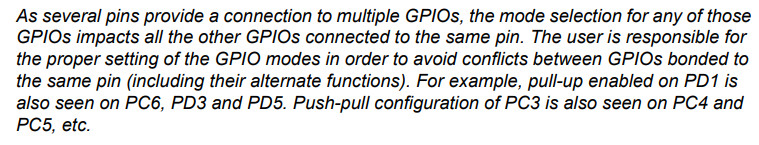
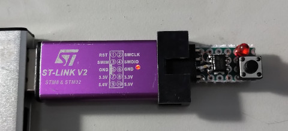
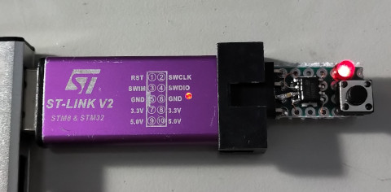

參考資訊：
https://github.com/lujji/stm8-bootloader
https://github.com/TG9541/stm8ef/wiki/STM8S-Programming
https://www.st.com/resource/en/reference_manual/cd00190271-stm8s-series-and-stm8af-series-8bit-microcontrollers-stmicroelectronics.pdf
STM8S001是一顆I/O相當複雜的MCU，如下表：
| Pin | Port |
|---|---|
| 1 | PD6/AIN6/UART1_RX、PA1/OSCIN |
| 5 | PA3/TIM2_CH3[SPI_NSS]\[UART1_TX]、PB5/I2C_SDA[TIM1_BKIN] |
| 6 | PB4/I2C_SCL/[ADC_ETR] |
| 7 | PC3/TIM1_CH3[TLI][TIM1_CH1N]、PC4/CLK_CCO/TIM1_CH4/[AIN2]/[TIM1_CH2N]、PC5/SPI_SCK[TIM2_CH1] |
| 8 | PC6/SPI_MOSI[TIM1_CH1]、PD1/SWIM、PD3/AIN4/TIM2_CH2/ADC_ETR、PD5/AIN5/UART1_TX |
例如：PD6和PA1同時綁到第一隻腳，因此，操作一般GPIO時，PD6和PA1是一樣的結果，但是切換到其它功能時，則不同運作，如設定AIN6或者OSCIN
官方說明如下


.equ PB_ODR, 0x5005
.equ PB_IDR, 0x5006
.equ PB_DDR, 0x5007
.equ PB_CR1, 0x5008
.equ PB_CR2, 0x5009
.area data
.area sseg
.area home
int main
.area cseg
main:
mov PB_DDR, #0x20
mov PB_CR1, #0x20
loop:
ld a, PB_ODR
xor a, #0x20
ld PB_ODR, a
ldw x, #60000
d0:
decw x
jrne d0
jp loop
編譯和燒錄
$ sdasstm8 -o main.s
$ sdldstm8 -ni -b home=0x8000 -b cseg=0x8080 -b data=0x0001 -b sseg=0xffff main.rel
$ sudo stm8flash -c stlinkv2 -p stm8s001j3 -u
Determine OPT area
Due to its file extension (or lack thereof), "Workaround" is considered as RAW BINARY format!
Unlocked device. Option bytes reset to default state.
Bytes written: 11
$ sudo stm8flash -c stlinkv2 -p stm8s001j3 -w main.ihx
Determine FLASH area
Due to its file extension (or lack thereof), "main.ihx" is considered as INTEL HEX format!
153 bytes at 0x8000... OK
Bytes written: 153
P.S. 如果燒錄失敗，實屬正常，再次執行燒錄命令即可，如果無法unlock(-u)，請更換其它IC
完成

